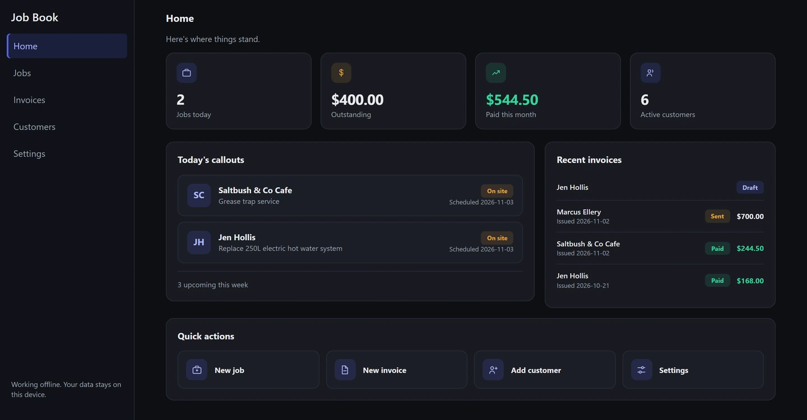

They do the work. I call the shots, catch the mistakes, and build things that keep working.

Business software a small operator buys once and owns. Runs on their own PC, works offline, no monthly bill.
Any well-run shop splits it the same way.